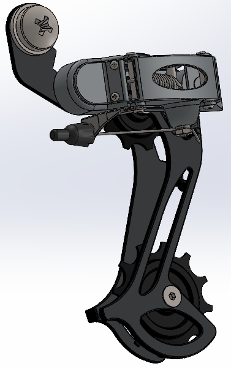
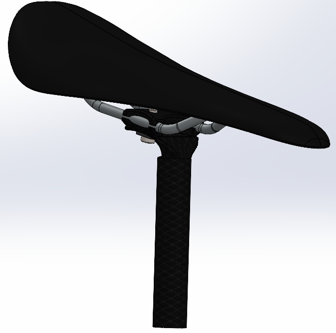

Autonomous boat
.jpg)
.jpg)
Overview
I worked on the autonomous boat project together with four people. It was a Robotics Club project. It was built to compete with other boats on a racing track. Track was a closed loop, that had some obstacles on it. Boat which did the most laps in five minutes won the competition.
The boat uses three IR sensors to gather data of its surroundings. Using that data best path is calculated. The boat has two motors. The boat turns itself by changing its motor speeds. The boats hull and cover were modelled in Solidworks and 3D printed.
I mainly focused on mechanical design, putting boat parts together and waterproofing it. I did a little electronics and some coding as well.
Struggles
Derailleur mates
 At the start it seamed like a simple task. I modelled all the smaller details and started putting those together. The derailleur should have been moving the same way as a real one. The problem was that every once in a while Solidworks said that some mates are not working properly, but just deleting the mate and putting the exact same mate back fixed the problem.
I couldn't completely solve the problem, but when I redefined those mates a little bit differently, then the errors didn't show up as often.
Chain
Chain should have been a quite simple to model, but when I combined it with my derailleur, then weird things started to happen. I had to do everything very precisely so I would only move the components that needed to be moved. It was pretty difficult to get the chain to a perfect length. On top of everything Solidworks crashed a lot which made everything even harder.
Saddle
 Saddle was hard to model, because it has a special shape. I used boundary surface to make the shape. It took a long time before I got the shape that I really wanted. Other problem was that mirroring one side sometimes messed up the curves in the middle. Luckily there are tools in Solidworks that help to find those defects and then repair them.
What could be improved
It was the first time that I used CAD software, so there are definitely many things that could be improved.
- Small details - We didn't have much time to spend on modelling the small details, but I think that it would make the project even better.
- Derailleur - If I had modelled this part differently, then I would have not had the problems with mating. I should have made the details so that I could have used simpler mates.
- Sketches - Some sketches had too many dimensions, so editing the sketch was very difficult.
What I learned
Through this project I got a lot of experience in using CAD software. I learned about all the main functions and how to properly use these. I also learned how to properly make sketches so they could be easily editable later.
I learned a lot about bicycle design. I found out how exactly derailleur works and how bike breaks work.